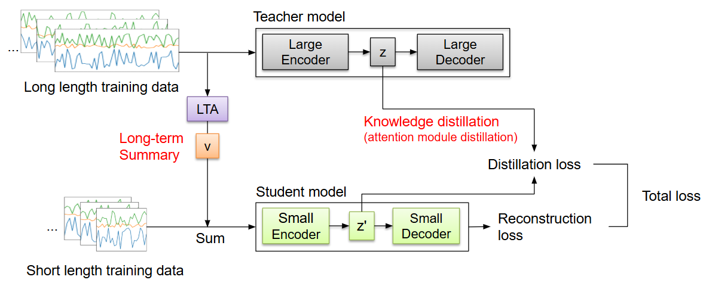
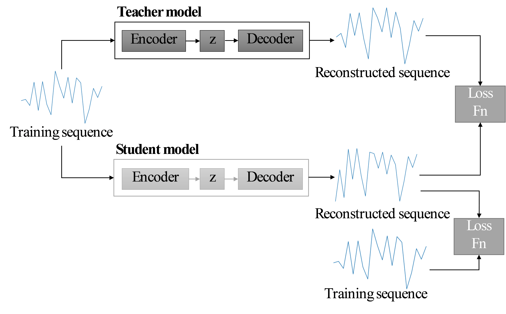
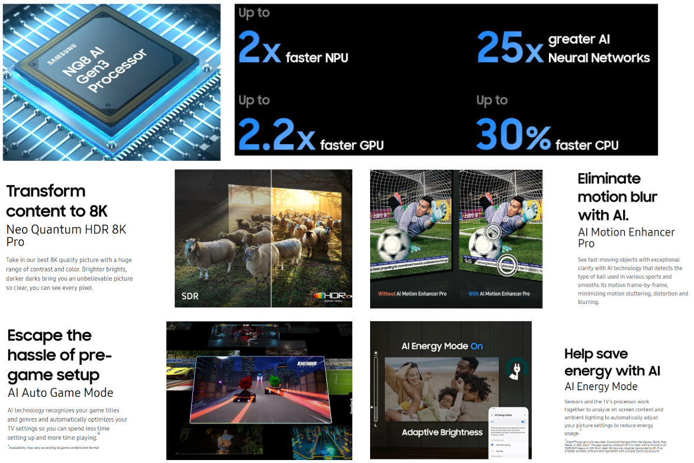
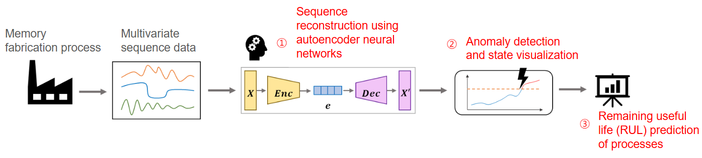
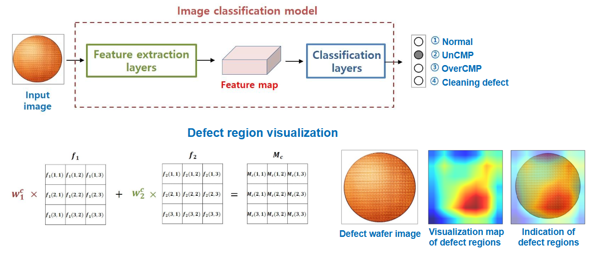
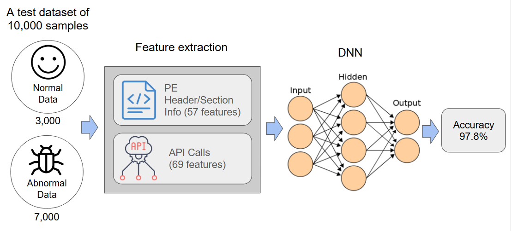
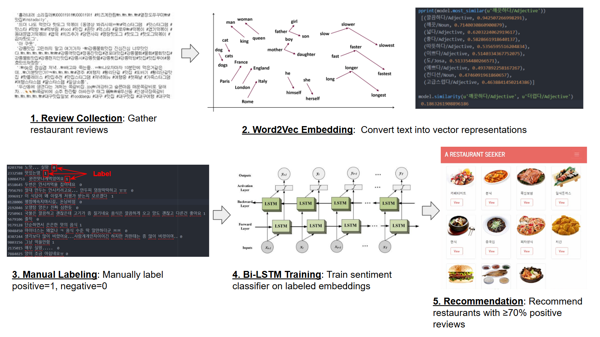

Seonyoung Kim
 GitHub
GitHub

Hello, I am Seonyoung Kim, an AI Researcher in the SoC team at Samsung Research, where I focus on efficient inference of large-scale models and hardware-software (HW-SW) co-design. I have been interested in addressing the challenges of deploying models in resource-constrained systems. I have conducted research on the efficient deployment of LLMs, time-series models, and speech models deployment using Quantization and efficient data selection for fine-tuning at Samsung Research.
My research focus lies in efficient ML/AI, edge device inference, and hardware-aware AI design. Ultimately, I aim to develop highly efficient and widely accessible AI systems that can advance research and contribute to broader real-world applications.
Previously, I received my B.S. in Computer Engineering from Hongik University, and my M.S. in Computer Science from Korea Advanced Institute of Science and Technology (KAIST), where I was advised by Professor Myoungho Kim.
Contents
Academic & Research Background
-
AI Researcher | Samsung Research
Aug. 2022 – Present- NPU Architecture team (SoC)
- Focus: Quantization, LLMs, HW–SW co-design -
M.S. in Computer Science | Korea Advanced Institute of Science and Technology (KAIST)
Sep. 2019 – Feb. 2022- Research Assistant (RA), Database Lab
- Advisor: Prof. Myoungho Kim
- Focus: Model Compression, Knowledge Distillation, Time-series anomaly detection -
B.S. in Computer Engineering | Hongik University
Mar. 2015 – Aug. 2019- Undergraduate Researcher, Research Lab for Distributed INtelligence and Autonomy
- Advisor: Prof. Young Yoon
- Focus: AI, Data analysis, Distributed system
Publications
-
Bespoke LUT: Non-Linear Approximation for Integer-only Transformer Inference on NPUs

Bespoke LUT introduces per-layer dual-range lookup tables with interpolation to approximate nonlinear operations efficiently on NPUs. By offloading these operations from the SFU to the MAU, it reduces latency and power consumption. Experiments on Transformer models demonstrate up to 3.3× speedup with less than 6% accuracy degradation, underscoring its effectiveness for efficient NPU deployment.
-
Small-sized Anomaly Detection Models for Time Series based on Distillation of Long-term Dependency
We developed a lightweight attention-based model for time-series anomaly detection by combining knowledge distillation with a novel Long-Term Accumulator (LTA). Even with input lengths reduced to 50% of the original, the model preserves long-term dependencies, achieving over 95% parameter reduction and nearly 50% faster inference while maintaining comparable F1 scores to larger models.
-
Knowledge distillation for anomaly detection in multivariate time series data
This paper proposes a knowledge distillation approach for anomaly detection in multivariate time-series data using LSTM-based autoencoders. By introducing an MSE-based distillation loss, the method enables a compact student model to achieve performance comparable to its teacher while reducing parameters by about 60%. This demonstrates the potential of knowledge distillation for building efficient and practical anomaly detection systems.
Projects
-
Efficient AI Deployment on NPUs
Aug. 2022 - Present
At Samsung Research, I work on deploying large-scale AI models efficiently on custom Neural Processing Units (NPUs). My research covers model compression and optimization techniques including quantization, pruning, and knowledge distillation, and I handle a wide range of models such as LLaMA, Gemma, OPT, SmolLM, and speech models, occasionally performing fine-tuning when required. I also focus on hardware–software co-design, adapting model architectures for NPU compatibility and developing specialized components like LUT-based acceleration. These efforts contribute to bringing advanced AI capabilities directly to consumer devices, as showcased in Samsung’s AI-powered TVs featuring our NPU technology.
Related article: Samsung Newsroom – The New Samsung AI TV
-
Edge Computing–Based Anomaly Detection in Memory Semiconductor Processes
Sep. 2020 - Sep. 2021
We developed a process monitoring system for memory semiconductor fabrication that detects anomalies using multivariate sequence data. The system employs autoencoder-based sequence reconstruction to calculate anomaly scores and visualize process states, and incorporates an LSTM-based deep learning model to predict the remaining useful life (RUL) of processes, enabling predictive maintenance and improved efficiency.
-
CMP Wafer Defect Detection Project
Dec. 2019 - Jun. 2020
We developed a defect wafer detection system using CMP wafer surface images, where a deep learning model classified wafer states (Normal, UnCMP, OverCMP, Cleaning Defect) and visualized defect regions with class activation maps, further enhanced by generative models for virtual defect wafer images. I contributed to this project by supporting data collection and model training.
-
Neouly Security Project
Dec. 2018 – Jun. 2019
We collected PE and APK files through web crawling and extracted distinguishing features of malicious samples. Using Cuckoo Sandbox, we created a virtual environment to log behavioral patterns of malware, which were then used to train a Deep Neural Network for malware detection. Our model achieved an accuracy of 97.8%, surpassing the top team’s result (97.53%) in the KISA Data Challenge.
-
AI-based Restaurant Recommendation System
Jan. 2018 – Nov. 2018
As my undergraduate capstone project under the supervision of Prof. Young Yoon, I developed an AI-based restaurant recommendation system. Restaurant review data were collected through web crawling, embedded with Word2Vec, manually labeled for sentiment, and classified using a Bi-LSTM model to recommend restaurants with more than 70% positive reviews. The system was implemented using Python, Django, Java, HTML, and MySQL.
Talks & Presentations
-
Internal Seminar (Journal Club) | Samsung Research
Feb. 2023 – PresentParticipated in the company’s internal Journal Club, where researchers rotate presenting recent papers.
Presented papers:- "Addition is almost all you need: Compressing neural networks with double binary factorization", Aug. 2025
- "SmolVLM: Redefining small and efficient multimodal models", Apr. 2025
- "You Only Cache Once: Decoder-Decoder Architectures for Language Models", Nov. 2024
- "LoRA: Low-Rank Adaptation of Large Language Models", Jul. 2024
- "Introduction to LLM: From GPT to Chinchilla and LLaMA", Mar. 2024
- "PTQ4ViT: Post-Training Quantization for Vision Transformers with Twin Uniform Quantization", Dec. 2023
- "cosFormer: Rethinking Softmax In Attention", Jul. 2023
- "FQ-ViT: Post-Training Quantization for Fully Quantized Vision Transformer", Feb. 2023
-
Graduate Seminar | KAIST | 2019 – 2022
Jan. 2019 – May. 2021Presented papers:- "Knowledge Distillation and Beyond: From FitNet and Born-Again Networks to Noisy Time-Series Models", May 2021 [Slides]
- "Knowledge Distillation in Time-series (2)", Nov. 2020 [Slides]
- "Knowledge Distillation in Time-series (1)", Oct. 2020 [Slides]
- "Model Compression and Acceleration", July 2020 [Slides]
- "A Deep Neural Network for Unsupervised Anomaly Detection and Diagnosis in Multivariate Time Series Data", Feb. 2020 [Slides]
- "LSTM-based Encoder-Decoder for Multi-sensor Anomaly Detection", Jan. 2020 [Slides]
Honors & Scholarships
-
Outstanding Teaching Assistant Award | KAIST
Jun. 2020- Selected as an Outstanding Teaching Assistant for the 'Data Structures' course in recognition of receiving top-tier scores on end-of-semester student evaluations. -
The Hongik Scholarship ($15,900 in total) | Hongik University
Aug. 2015 – Sep. 2018- Continuously recognized for top academic achievements with a merit scholarship awarded annually. Over four years, I received a total of approximately $15,900, which included two full-tuition waivers for exceptional grades. -
Korea Open Source Software Developers Lab (KOSS) Hackathon (2nd place) | Korea IT Business Promotion Association
Oct. 2016- As a member of the Linux perf team, contributed to the open-source kernel tool by analyzing its source code and implementing a visualization feature for the srcline function to improve its usability.
Teaching Assistant
Database System, Graduate Course | KAIST | Mar. 2021 – Jun. 2021
System Programming, Undergraduate Course | KAIST | Sep. 2020 – Dec. 2020
Data Structure, Undergraduate Course | KAIST | Sep. 2020 – Dec. 2020
Extracurricular Activities
-
Vice President, Graduate Student Association | School of Computing, KAIST
Mar. 2020 – Feb. 2021- Took a leadership role in organizing departmental events and acted as a key liaison, fostering close communication and a supportive environment within the graduate student community.